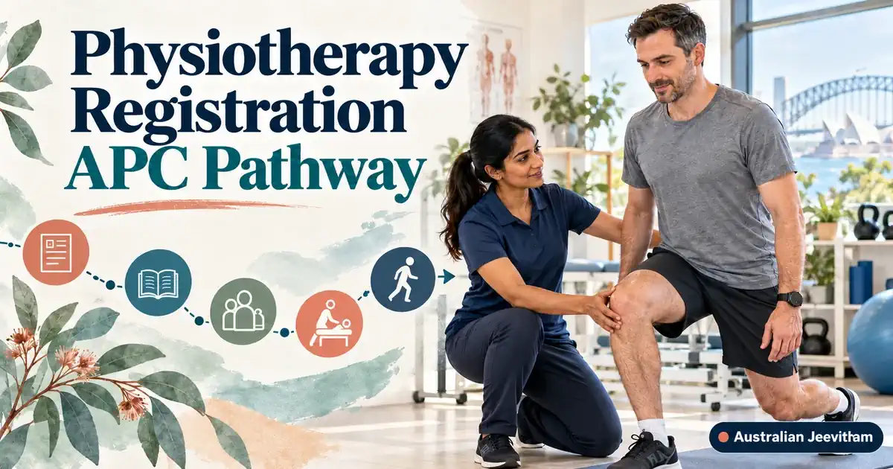

ഓസ്ട്രേലിയൻ Physiotherapy registration, APC pathway ഗൈഡ്Physiotherapy Registration (APC Pathway)
Australia-യിൽ physiotherapist ആയി ജോലി ചെയ്യാൻ APC assessment, Physiotherapy Board registration എന്നിവ വേറിട്ട ഘട്ടങ്ങളാണ്. Migration skills assessment ഇതിൽ നിന്നും വേറെയും ആകാം. The old Standard Assessment pathway was replaced by the Australian Physiotherapy Entry Pathway (APEP) from 1 October 2025.
By Binu Vadakkedath
Published and last updated: September 2026 · Verify current requirements with the linked official authorities

Express FLYR, FLYR and APEP have different eligibility. ഇന്ത്യൻ qualification ഉള്ളവർ പൊതുവെ APEP പരിശോധിക്കേണ്ടിവരും, പക്ഷേ live eligibility tool ഉപയോഗിച്ച് ഉറപ്പാക്കണം.
- Express FLYR
- FLYR
- APEP
- APC Certificate
- Ahpra
This guide is general information, not migration, legal, education, employment or financial advice. Rules, fees, occupation lists and assessment processes can change. Verify your circumstances with the official authority and use a registered migration agent or qualified professional where personal advice is required. തീരുമാനം എടുക്കുന്നതിന് മുമ്പ് official website-ലെ ഏറ്റവും പുതിയ വിവരങ്ങൾ പരിശോധിക്കുക.
1. Three current APC pathways
Express FLYR is for eligible qualifications from approved countries or jurisdictions. FLYR applies to defined comparable pathways. APEP is the broader entry pathway for overseas-qualified physiotherapists who are not eligible for the faster routes.
Country lists and eligibility can change. Use the APC eligibility assessment rather than assuming eligibility from nationality alone.
2. APEP stages
The APEP sequence includes Eligibility Assessment, Cultural Safety Training, Written Assessment, Capability Assessment and a Clinical Workshop. The capability stage is an online oral assessment, while the clinical workshop is in person in Melbourne.
The APC states that APEP takes approximately nine months for candidates who progress as quickly as possible. Your timing can differ because of preparation, assessment availability, document checks and repeat attempts, so confirm current scheduling directly with APC.
What the assessed stages involve
- Written Assessment: a case-based online assessment, also offered at some physical venues.
- Capability Assessment: a live, open-book oral assessment conducted one-on-one with an Australian physiotherapist examiner, delivered remotely.
- Clinical Workshop: a full-day, small-group training and assessment session held in person in Melbourne.
Stage formats and scheduling can change, so check the current APEP page on the APC website before you plan travel or book assessments.
3. APC assessment and Ahpra registration
The APC issues the assessment outcome or Final Certificate. Registration to practise is decided separately by the Physiotherapy Board of Australia through Ahpra. Registration can include identity, English language, criminal history and recency requirements.
APC process പൂർത്തിയാക്കിയാൽ automatically Ahpra registration ലഭിക്കും എന്ന് കരുതരുത്. രണ്ടു organisations-ന്റെയും current requirements പ്രത്യേകം പരിശോധിക്കുക.
4. Skilled migration assessment is separate
If you need a skills assessment for migration, use the APC's dedicated Assessment for Skilled Migration process. A registration assessment, migration assessment, visa application and job search are related but separate tasks.
5. Planning checklist
- Run the APC pathway eligibility check.
- Read the current fee and refund schedule before paying.
- Collect degree, registration and good-standing evidence early.
- Plan for Melbourne travel if APEP clinical workshop applies.
- Check Ahpra registration and Home Affairs rules separately.
Official sources and current checks
ഈ ലേഖനത്തിലെ പ്രധാന വിവരങ്ങൾ പരിശോധിക്കാൻ താഴെയുള്ള official links ഉപയോഗിക്കുക. Fees, processing times, eligibility എന്നിവ മാറാം.
Frequently asked questions
What replaced the APC Standard Assessment pathway?
The Australian Physiotherapy Entry Pathway, or APEP, replaced Standard Assessment from 1 October 2025.
Is the APEP entirely online?
No. It includes online components, but the Clinical Workshop is conducted in person in Melbourne.
Does an APC Final Certificate automatically grant Ahpra registration?
No. Registration is a separate decision by the Physiotherapy Board of Australia through Ahpra.
Is the APC registration assessment the same as a migration skills assessment?
No. The APC has a separate Assessment for Skilled Migration process.
Skills assessments, settlement & life after PR

AHPRA Nursing Registration
A step-by-step roadmap for internationally qualified nurses covering Stream B, OBA, NCLEX-RN, OSCE, and English requirements.
- AHPRA / NMBA
- NCLEX & OSCE
- Healthcare

Superannuation Guide
12% SG rate, Payday Super, EPF/PF comparison, choosing and consolidating funds, and DASP for eligible former temporary residents.
- 12% SG Rate
- EPF vs Super
- DASP

Renting Your First Home
Rental applications, inspections, state-specific bond rules, condition reports, and tenancy resources for new arrivals.
- Bond Rules
- Inspections
- Tenant Rights